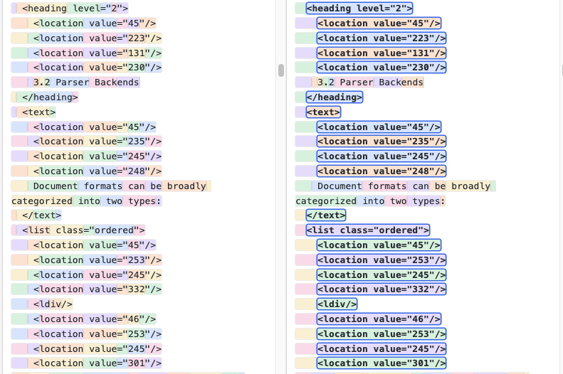

In principle, any general-purpose tokenizer can handle DocLang as-is — DocLang is plain, well-formed XML markup, and a tokenizer that has never seen it before will do exactly what it does with any unfamiliar markup: represent text like <location value="267"/> or <heading level="1"> as a handful of generic subword tokens. Nothing breaks, nothing is misread. It's just the ordinary, unremarkable default.
To best align with DocLang's design, though, a tokenizer can be extended with DocLang's own vocabulary — in that case, that same text gets dedicated token IDs instead.
This post shows how those special tokens can be used, and illustrates the potential impact with indicative results from a sample dataset.
A vocabulary extension, not a new tokenizer
DocLang ships that extension as a single function: doclang.tokenization.get_special_tokens(). It returns a flat list of token strings covering every <location value="N"/> the format defines, plus fixed tokens for structural tags, attributes, and OTSL table cells. Hand that list to any Hugging Face tokenizer's add_special_tokens, and DocLang's own markup gets dedicated token IDs instead of being decomposed into generic subwords.
from transformers import AutoTokenizer import doclang.tokenization as dt tokenizer = AutoTokenizer.from_pretrained("openai/gpt-oss-20b") tokenizer.add_special_tokens( {"additional_special_tokens": dt.get_special_tokens()} )
What it looks like on one document
Below is the same DocLang fragment shown twice, tokenized with two variants of the same tokenizer: the base tokenizer as-is on the left, extended with DocLang's special tokens on the right. Let us consider for example the <heading level="2"> tag, the <location value="45"/> tag, or the <list class="ordered"> declaration. On the left, the base tokenizer represents each one of them as several generic tokens. On the right, though, the DocLang-customized tokenizer resolves each one of them as a single dedicated token, as illustrated by the blue outlines.

Left: the base tokenizer. Right: the same tokenizer, extended with DocLang's vocabulary.
A quick comparison across more documents
Targeting a sample dataset of 8,030 DocLang documents, we ran a preliminary comparison across two different base tokenizers (ibm-granite/granite-4.0-350m and openai/gpt-oss-20b), each tested with and without the vocabulary extension. The results below are indicative of the benefit DocLang's special tokens can bring:
| Metric | granite-4.0-350m | gpt-oss-20b | ||
|---|---|---|---|---|
| Base | Extended | Base | Extended | |
| Mean tokens | 1,102 | 694 | 1,121 | 654 |
| Median tokens | 1,010 | 592 | 1,034 | 563 |
| Mean relative reduction | −41% | −45% | ||
| Median relative reduction | −40% | −45% | ||
Takeaway
Extending your tokenizer with DocLang's special-token vocabulary is optional but can meaningfully reduce token usage in your pipeline. Whether you are training DocLang-native models or otherwise building DocLang-native pipelines, this is a worthwhile step to consider.